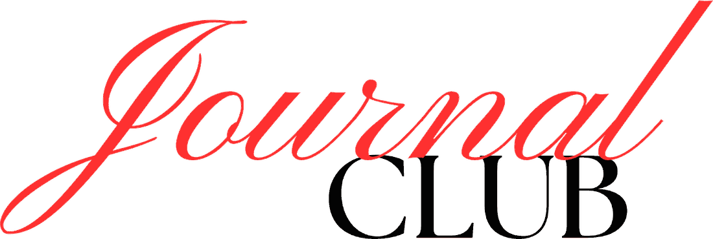

Join the club
Loading…
You are in
Journal Club member
Tell Nour whether you are coming. You can change your mind.
One paper, one hour, every two weeks. We already have your name, university and year from your account, so this is short.
Leave it blank to use the name on your account.